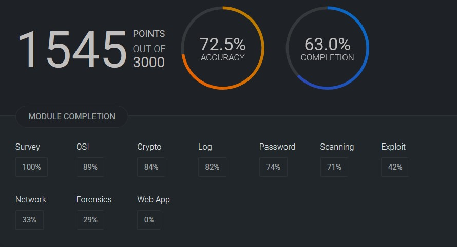
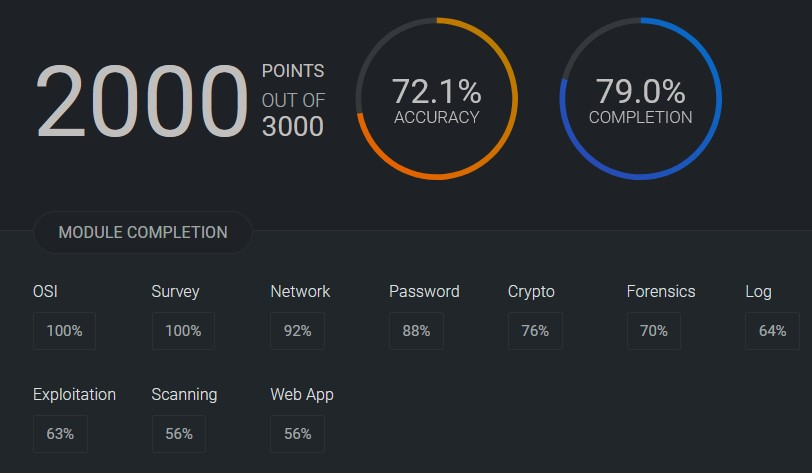

This spring, I had the opportunity to compete in the National Cyber League (NCL), a cybersecurity competition that challenges students across the country in real-world scenarios ranging from cryptography and password cracking to log analysis and web app exploitation.
For the individual game, I scored 1545 out of 3000 points, with an accuracy of 72.5% and a completion rate of 63.0%. My strongest areas were OSI, and Crypto, while I definitely plan to improve in Web App and Forensics moving forward. My leaderboard ranking was 1091/8570, and I’m proud of how far I’ve come in just a few seasons of competing.
In the team game, our group pushed even harder. We earned 2000 points out of 3000, with 72.1% accuracy and 79.0% completion. We cleared the OSI and Survey sections completely and performed especially well in Network and Password cracking. Our leaderboard ranking was 147/4798 and second overall at UNG.
← Back